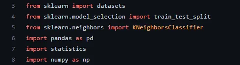
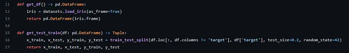
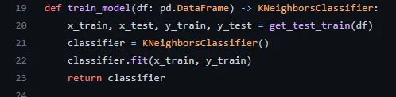
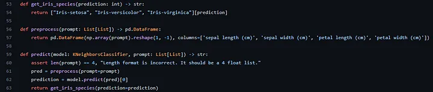

What is K-Nearest-Neighbors classification?
Starting your journey in Machine Learning and Data Science can be scary. You run into various terms that you don’t know and see things that you don’t understand at all. That’s how I felt when I first ran into algorithms like k-nearest-neighbors. But it is not that complicated! Let’s dive into this essential algorithm used for classification and regression. In this article, we will focus on the classification part of K-nearest-neighbors.
K-Nearest-Neighbors
K-Nearest-Neighbors algorithm is getting old. It was first developed in 1951 [1], by Evelyn Fix and Joseph Hodges, and it is widely used for classification and regression. In fact, this is a good starter algorithm to study. It is a non-parametric supervised learning. Non-parametric simply means that the number and nature of the parameters are flexible, and not fixed in advance.
Supervised learning refers to the learning process where the available data consists of labelled examples. For example, suppose I want to classify an email as spam or ham. The examples would consist in something like:
Text: “Click here to win U$10k now, for free.”
Classification_: “spam”_
This category of learning aims to learn a function that maps feature vectors to labels based on example input-output pairs.
K-Nearest-Neighbors algorithm works based on an assumption: similar points can be found near one another. Think about a cartesian plane. What the assumption is saying is: two points that are close to each other in the plane are likely to be the same class.

Source: https://www.javatpoint.com/k-nearest-neighbor-algorithm-for-machine-learning
Take a look in the image above. See that our examples are classified, they are either green (category A) or yellow (category B). KNN is not limited by 2 categories, but let’s work out this example. When a new data point comes to be classified, our algorithm calculates the distance between that point and the K nearest example points. Suppose that our algorithm used K=5 , and calculated that we have 3 nearest neighbors that are categorized as A and 2 categorized points as B. The algorithm would classify the new entry point as A, since the majority of our K nearest neighbors is A.
Ok, now we understand how does it work, but… How does it compute this distance? How can we find our nearest neighbors?
Computing Distance
We can use many distance computing functions to use in KNN. In this article, I’ll cover two of them, that are widely known: Euclidean and Manhattan distance.
Euclidean Distance
Let’s start with Euclidean distance. We study this a lot in high school, but let’s recap.

Suppose we have two points in the cartesian plane, being A = (2, 2) and B = (1, 5). Let’s work out the distance of them!

Computing this:

Now we know that the distance between the square root of 10. This is how our KNN algorithm know what points are closer to our new data point when we use Euclidean distance.
Manhattan Distance

This is the formula for our manhattan distance. It is named after the grid shape of the streets in Manhattan. Let’s work out the same example with A = (2, 2) and B = (1, 5). The computation will end up with:
| 1–2 | + | 5–2 | = 1 + 3 = 4
Our Mdist is 4 in this case, opposed to euclidean distance, square root of 10.
Comparing Euclidean and Manhattan visually:

Parameter Selection
In this algorithm, we have a parameter (that names it): K. But how to choose K? This is a question without a specific answer. The best choice of K depends upon the data. In general, if we have a large value of K, the effect of the noise in the classification is reduced (data and label noise are assumed deviations from the true dataset). When we have two classes, for example, it is nice to choose an odd K, to avoid ties. The number 5 is a good default number for K. However, a good K can be selected by various heuristic techniques.
We also have variations of KNN, like the Nearest Neighbor classifier and the Weighted nearest neighbor classifier. Taking care of the curse of the dimensionality is also really important. When we have high-dimensional data, dimension reduction is usually applied before applying KNN algorithm, avoiding the effects of the curse (in the KNN context, it would mean that the distance between two points is unhelpful in high dimensions because all vectors are almost equidistant to the search query vector).
Result Validation
A confusion (or matching) matrix is often used as a tool to validate the accuracy of KNN, but we also can apply more robust statistical methods. We will not cover this in this article.
Applications
KNN is widely used, for example, in Recommendation engines. It can assign a particular user to a particular group, and give recommendations based on that group.
Another common use case is Data Preprocessing. We frequently run into datasets that have missing values. Our KNN algorithm can estimate these missing values, in a process that is known as Data Imputation.
We also have applications in finance, healthcare and pattern recognition.
Implementation
Well, now we all know how the KNN algorithm works, so now let’s get our hands dirty and implement it. For learning purpose, we will use Scikit learn to achieve this.
I’ll leave my repository here: https://github.com/Lorenzobattistela/predict-iris
Drop a star if you like this article!
Let’s check out our model.py file.

Here we are just importing some functionalities we will use. I am using the iris dataset, train_test_split to split our training and testing data and our KNN classifier.

This piece of code refers to loading our dataset as a dataframe and returning it as a pandas DataFrame. ScikitLearn uses another dataset structure, but I decided to use pandas in this example.
In get_test_train , we split our data in training and testing, passing all columns that are not the target as X and target col as Y. Test size is 20% of our dataset, and random_state guarantees that when we load it again, the order will be the same (the random seed). Then we return our splitted dataset.

This function trains our classifier and return it. It is as simple as this. We simply fit our model with training data… and Done!

Let’s start with preprocess. Since we trained our model with labels, we need to pass what label each measure stands for when we are predicting. Prompt is a list with 4 floats (like [1.2, 5.3, 2.2, 4.1]). We process it and reshape it to fit our classifier with labels. Then, we can pass it to predict function.
The predict function will check for input, and simply predict our prompt. The result will be a number that stands for the class of our new data point. That’s why we need the get_iris_species function. Each number stands for one class. (0 for “iris setosa”, 1 for “iris versicolor” and 2 for “iris virginica”). Then we get what iris species our KNN algorithm spitted out, and we just created a KNN that predict iris dataset!
If you want to test the model with our training data, we also have a test function:

I simply calculated the percentage of correct predictions with our labels and returned the mean of it. There are other ways to measure error, but I chose the mean for example purposes.
Conclusion
KNN is a widely known algorithm, that has a lot of applications. It is a good starter when we are learning data science and machine learning. We also have a lot of libraries that provide KNN classifiers, but I recommend you to try to build one from scratch. I did this and it was really helpful. Besides learning vector operations, train and test data splitting and performing calculations, it is really cool to have a model working that you built from nothing.
That’s all for today, if you liked this article, don’t forget to follow me!
References
[1] Evelyn; Hodges, Joseph L. (1951).
k-nearest neighbors algorithm - Wikipedia